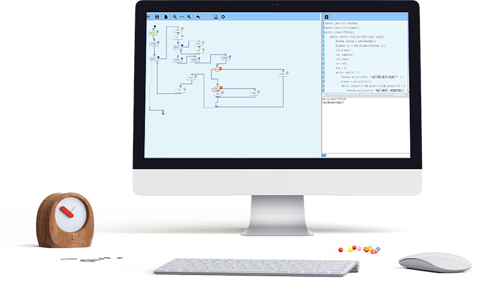

程式碼轉換
學生可透過圖形化介面將解決問題的步驟以流程圖的方式呈現外，同時可直接將所繪製的流程圖轉換為可執行的程式碼，以此驗證結果。

程式碼填空
除了將流程圖轉換為程式碼進行驗證外，同時可以透過CT2Code中特有的隱藏程式碼功能，以局部填空的方式逐步學習程式設計。

程式碼除錯
不論是以直接轉換執行或是填空執行的方式執行程式時，CT2Code都可以將程式的錯誤訊息獨立呈現於畫面中。其中包含了錯誤數量以及有問題的程式碼位置、行數等，讓學生能直接了解問題所在進而能快速處理問題。